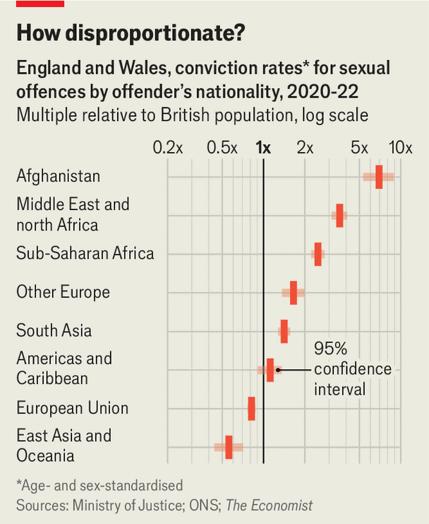
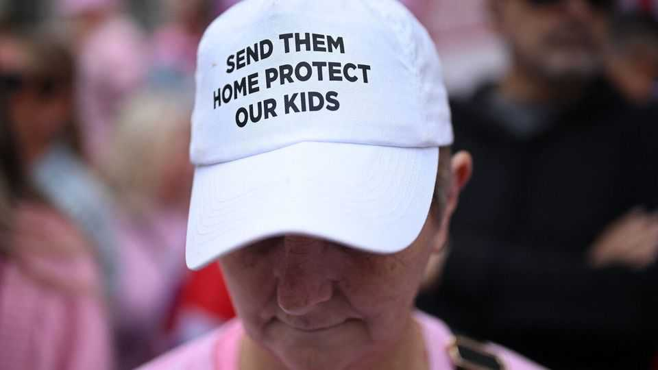

Do immigrants from some countries commit more sex crimes?
A hard look at Britain’s data suggests so. But it is hardly an epidemic
Oct 29th 2026
In Bristol last November three men and a 17-year-old boy, all Afghans, gang-raped a 17-year-old girl over several hours. Beforehand they had groomed her on Snapchat and plied her with alcohol; afterwards they fled to France in a lorry. The French authorities returned them to Britain, where they were convicted and, on October 6th, sentenced to long jail terms. In court the girl described how “listening to it all again from the lawyers kept me reliving everything that happened to me”.
Such horrors fuel suspicion of migrants. So did a recent state-issued booklet about Britain for asylum-seekers. Page five clarified that the legal age of consent is 16 and that rape is a serious crime. “I’ve never heard of someone who decided not to rape because they received a leaflet,” said Kemi Badenoch, the Tory leader. The clumsy campaign fed the idea that some immigrants—notably men seeking asylum—are responsible for a disproportionate share of sex offences. Nick Timothy, the shadow justice secretary, claims that “Afghans are over TWENTY times more likely to commit sex crimes than Brits.”
Is that true? The government does not publish crime rates by immigration status. The limited data it does release are raw counts of offences by those of each nationality, from a countrywide police database. The “20 times” claim was based on there being 13,000 Afghans in Britain, an estimate from the Office for National Statistics’ Annual Population Survey. That figure is unreliable, however, having been extrapolated from a sample of fewer than 60 individuals. In 2021 the ONS stopped publishing this population estimate owing to plummeting survey-response rates.
The Economist’s analysis suggests that the “20 times” claim is a wild exaggeration. But our numbers are hardly reassuring.
The Migration Observatory, a think-tank based at Oxford University, obtained figures through freedom-of-information requests to the Ministry of Justice. These count cautions and convictions in England and Wales, split by offenders’ nationality, between 2010 and 2024. The data detail 8m crimes, of which 106,000 are sex offences ranging from rape to consensual sex in public. The police’s recording of offenders’ nationality is messy, but we found that four-fifths of sex crimes were committed by British people. Just 0.39%—409 offences over the 15-year period—were committed by people who said they were Afghan.
Whether 409 crimes is a lot or a little depends on how many Afghans are in the country. In March 2021 the last census reported 14,300 Afghan passport-holders living in England and Wales, and another 7,100 without a passport who said they were Afghan: a total population of 21,400.
The census is just a snapshot in time. Since 2021 some 3m people have settled in Britain and the foreign-born population has risen from 16% to 19% of the total. After the Taliban seized Kabul, in August 2021, some 38,000 Afghans flocked to Britain over the next year and a half. Accounting for those who later left and those who became citizens, we estimate that the Afghan population of England and Wales had doubled to 45,000 by the end of 2022.

To capture more than the snapshot we analysed convictions during a three-year period, 2020-22, and averaged our population estimate over those three years. We then standardised our estimate to account for age and sex (men commit 98% of sex crimes, for example, and Afghans are about ten years younger than the population at large). This suggested Afghans are convicted of sex crimes at seven times the British rate—a far cry from Mr Timothy’s “over 20 times”, but disturbing nevertheless (see chart). Our number is still uncertain: it may be skewed by a few serial offenders, by quirks in reporting and detection rates for such crimes.
Evidence from other countries, using different methods, suggests that this may not be solely a British problem. The perception is certainly not. “The main group, of the worst crimes, like raping, like killing people…the main category are Syrians and Afghans,” Alice Weidel, leader of Germany’s populist Alternative for Germany party, told The Economist. In Austria, Denmark, Finland, Germany and Sweden immigrants from the Middle East, North Africa, Central Asia and the Horn of Africa are over-represented among suspects and convicts—especially for sex crimes. Where age-standardised analysis exists for those countries, the over-representation shrinks, as in Britain, but it does not vanish.
Looking at convictions by ethnicity, rather than nationality, is less unsettling. The Ministry of Justice produces detailed data on prosecutions and convictions by age and sex for 18 ethnicities. We used these to repeat our age-standardised analysis, for the same 2020-22 window. Our results suggested that Pakistani (an ethnicity, not a nationality, in those data), other Asian and other non-black minority men were no more likely to have been convicted of sex offences than white British men.
It should not be surprising that conviction rates differ between nationalities. Ben Brindle of the Migration Observatory notes that many migrants will have witnessed violence, or come from poor backgrounds. This drives criminality, and being socially isolated and jobless in Britain doesn’t help. “Just as large differences in conviction rates exist among British citizens, they will be present across different nationalities, too,” he says.
And the numbers need to be kept in perspective. In 2010-12 Afghan nationals were convicted of 92 sex crimes; in 2022-24 the total was 102. Ten additional sex crimes, after the Afghan population has roughly tripled, is not an epidemic. ■
Editor’s note (October 26th 2026): This article has been changed to clarify the wording on sex offences by ethnicity.
For more expert analysis of the biggest stories in Britain, sign up to Blighty, our weekly subscriber-only newsletter.
